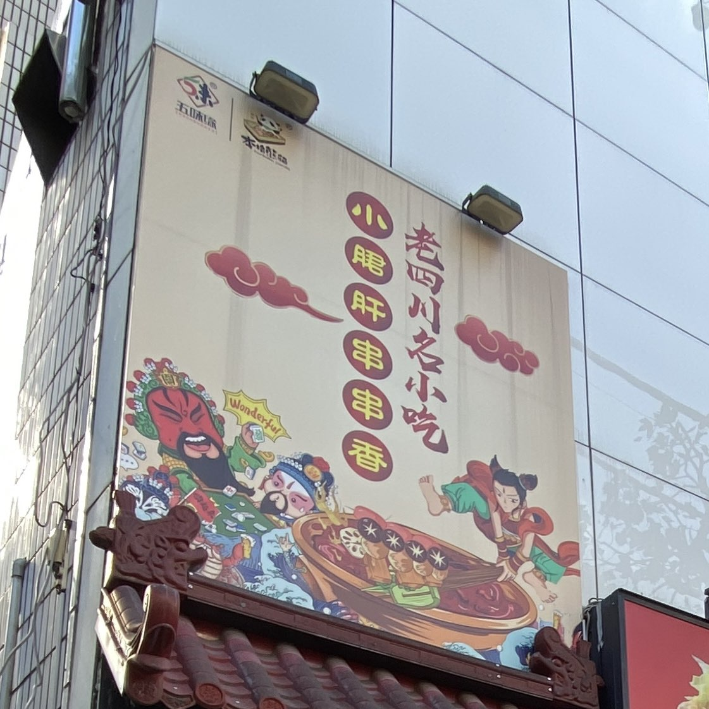
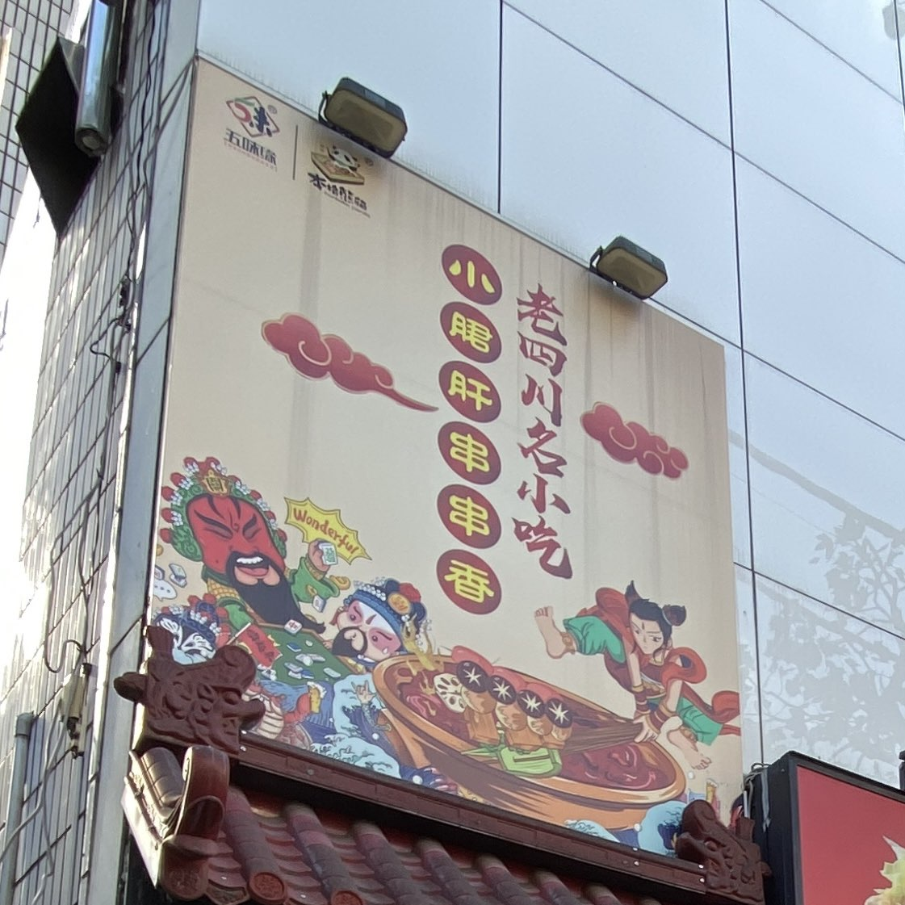

これまで行ってきた、高田馬場・早稲田周辺にあるガチ中華料理店を紹介します。順次更新します。高田馬場駅からの徒歩でのおおよその所要時間順に掲載しています。
- 目次
- 楼・蘭州拉麺
- 小米椒江湖酒舍
- 物産島
- 豊栄過橋米線
- 李厨
- 成都娘酸菜魚
- 大椀蘭州拉麵・刀削麺
- 张亮麻辣烫
- 虾兵蟹将
- 老四川名小吃 小郡肝串串香
- 億俐発台湾無骨香脆鶏柳
- 1+Dumpling 西早稲田店
楼・蘭州拉麺
所在地 : 〒169-0075 東京都新宿区高田馬場1丁目26-6 ドン・キホーテ地下1階 Fiビル
早大生お馴染みの高田馬場駅前芳林堂書店が入る建物の地下の飲食店街で、日本料理店に混ざって店を構えている蘭州拉麵店。これでも店員は全員中国人、客も中国人が多めの立派なガチ中華。日本人の客は少なめだが、店構えのおかげで入りやすい。拉麵は麺の太さも選べるので好きなのを選ぼう。迷ったらおすすめと書いてあるやつを選べばよし。注意すべきことといえば、入店時に席の案内をされないので適当に空いている席に座る点くらいか（ガチ中華はだいたいこう）。

小米椒江湖酒舍
所在地 : 〒169-0075 東京都新宿区高田馬場3丁目1-3 2F
栄通りの四川料理店。栄通りの店はどれも自己主張が強いからか、またはこの店の存在感が薄いからか、またはその両方か、事前に場所を調べて現地に行っても店を探すのに少し苦労する。予約なしで行ったら「没有预约就没有位子（予約ないと席ないよ）」と言われてしまったので、少なくとも夜は予約をして行った方が良いだろう。店内の中国感は抜群、店内BGMは中国語の歌が流れ、天井から吊り下げられたモニターには店内BGMのカラオケが映されている。日本のガチ中華の四川料理は中国人向けとはいえ辛さをある程度手加減している店が多いのだが、ここは他の店と比べても辛さが上だった。メニューも主に中国語で書かれ、その下に少し小さくメニューの日本語訳が書かれている程度で、最初から日本人が来ることを想定していないか、来るとしても珍しいということだろうか。味のほうはとても美味しいのだが、翌日の腹部の具合には気を付けよう。

物産島
所在地 : 〒169-0075 東京都新宿区高田馬場3丁目5-5 ACN高田馬場ビル 1階
栄通りの端っこ、東京富士大学側に店を構える中国物産店。飲食店というよりは物産店、弁当屋の性格が強い。筆者の行きつけ。ここの生煎（焼き小籠包）が好き。店員は上海人や広東人など。全体的に辛くない味付けで日本人にも馴染みやすい。客はほとんどが中国人。店内では日本語と中国語が適度に混じり合っている。自分が知る限りでは高田馬場周辺のガチ中華はここと前述の蘭州拉麵と沙县小吃以外全部辛め。写真一枚目右側の丸い弁当は500円（確か）でコスパも良い。
豊栄過橋米線
所在地 : 〒169-0075 東京都新宿区高田馬場3丁目12-8 Ks高田馬場ビル 1F
栄通りの物産島の隣にある、過橋米線（雲南省の米の麵）の店。弁当も売っている。過橋米線を注文すると炊飯鍋みたいな鍋が運ばれてきて、目の前でスープに麵を入れてくれる。ラーメンのスープを飲み干すタイプの人間でも、この過橋米線には降参せざるを得ないだろう。

李厨
所在地 : 〒169-0075 東京都新宿区高田馬場3丁目4-16 MKビル 2階
前述の物産島の向かい側にある湖南料理店。筆者がよく行くお気に入りの店。湖南料理は辛い味付けで有名だが、ここの角煮ともつ煮は辛くない。もちろんメニューの殆どは辛いものだが。客は98%中国人。日本人は見当たらず、店内では大声で中国語が飛び交うなど、かなり中国らしさがある。中国語を話せないことを店員が察すると日本語で話してくるので安心できる。

成都娘酸菜魚
所在地 : 〒169-0075 東京都新宿区高田馬場1丁目27-6 Kiビル 5階
別名「成都姑娘」。名前からわかる通り四川料理店。店の名前にもある通り、酸菜鱼（写真参照）が看板メニューらしい。四川料理とあって料理は辛いものばかり。店内は綺麗で落ち着いた雰囲気でお洒落。しかし忘れてはならない、ここの客もほぼ全員が中国人であるということを。つまり騒がしいということだ。

大椀蘭州拉麵・刀削麺
所在地 : 〒169-0075 東京都新宿区高田馬場2丁目14-6 2階
高田馬場駅ロータリーを抜けた早稲田通り沿い、カラオケ館の向かい側にある麺屋。麺以外にもいろいろある。蘭州拉麵と書いてあるが店長は東北人らしい。入店するや否や店員から早口の中国語が飛んでくる。券売機があるが、券売機では紙幣が使えないこと。なので来店する客（当然のごとく中国人が主）は店員に口頭で注文する。入店0秒で口頭注文をする客が多いところを見ると、常連が多いのだろうか。突っ込みどころの多い店だが、味はいかにもガチ中華という味。店員が客と談笑していたり、店員が店の席で昼食を取っていたり、スマホをいじっていたりするなど「ガチ中華」を味わうならもってこいの店と言えるだろう。

麻辣刀削面
张亮麻辣烫
所在地 : 〒169-0075 東京都新宿区高田馬場1丁目17-18
これまた早稲田通り沿いで麻辣烫を出すチェーン店。麻辣烫以外のメニューも豊富。店内は中国語ばかりで日本語が見当たらない。以前日本人の友人を連れて行ったときに「メニューが読めん」と言われたほど。店の内装が中国をそのまま日本に持ってきたかのような雰囲気で、ここは本当に日本なのかと疑問に思った（余談だが、筆者のお気に入りのチェーン店は小杨生煎。雰囲気がそっくりだったので思い出してしまった。）。これだと日本語が通じるのかも怪しく思えてくるが、日本語は通じるらしい。


虾兵蟹将
所在地 : 〒169-0075 東京都新宿区高田馬場1丁目6-15 荒井ビル 1F
閉店した本格熊猫の跡地にできた、東北料理と四川料理の店。外装の看板に描かれたザリガニとカニがかわいい。注文にはテーブルに置いてある端末を使う。辛い料理が多いものの他の店と比べるとだいぶ控えめ。辛くないのももちろんある。干煸豆角（インゲン炒め）が他の店と一味違ってサクサクしており、特に美味しいと思った。


干煸豆角と水煮牛肉
老四川名小吃 小郡肝串串香
所在地 : 〒169-0075 東京都新宿区高田馬場1丁目6-15 荒井ビル 3F
 

本格熊猫！君は閉店したはずの本格熊猫じゃないか！！生きてたのか！！
所在地的には虾兵蟹将の上、入口は虾兵蟹将の二つ隣にある階段。店内は面白い構造をしており、入口の階段で3階まで上がったところにレジがあり、そこから更に階段で上に一部屋、下に一部屋ある。小炒黄牛肉（牛肉炒め）
頼んだら、これまでの人生で最上位級に辛かった。悶えるほど辛い。筆者はインドカレーでも必ず激辛を頼んだり、好き好んでデスソースをかけるような人間だが、これほどまでに辛さを感じたのは人生で片手で数えられるほどしかない。
後から知ったことだが、980円でレジ横のバイキングが食べ放題だったらしい。写真の小炒黄牛肉は税込1070円だったので、普通にメニューから注文するよりも980円のバイキングを選択した方が良いだろう。メニューにもバイキングにも辛くない料理があったので、そこは安心してほしい。もし辛いのを頼んだら、翌日の腹痛に備えてください。
あと本格熊猫は普通に閉店しています。もうありません。
赤いのと緑色のは全て唐辛子
2023/11/16追記
また行きました。今度は980円の食べ放題を注文してみました。食べ放題は昼にやっているみたいです。下の写真の料理が食べ放題！もちろん残すのは厳禁。残したら500円追加です。これなら毎日通ってもいいと思うほどに美味しい。これが食べ放題で980円は破格の一言に尽きる。
あとこれは今日気づいたんですけれども、外の看板の端っこに本格熊猫のロゴが描いてある。店内モニターにも「本格熊猫 高田馬場店 3階」と表示されていたのを見るに、どうやらここは本格熊猫の系列店的なやつなのだろうか。
億俐発台湾無骨香脆鶏柳
所在地 : 〒169-0072 東京都新宿区大久保3丁目9-1
店名を覚えられない。高田馬場駅よりも西早稲田駅に近い。戸山公園大久保地区に隣接した場所にある。正直なところガチ中華と呼んでいいのか迷ったが、店員も料理人も中国人で、客にもよく中国人がおり、メニューにも日本ではあまり見かけないものがあったので載せることにした。実は筆者がよく行く場所でもある。住友不動産新宿ガーデンタワーが隣接しているからか、昼に行くとそこで働いているらしき人たちがたくさんいる。自分のお気に入りは红烧肉土豆盖饭（豚角煮とジャガイモ丼定食）と孜然羊肉（ラム肉のクミン風炒め定食）。また、米とスープが無料でお代わりし放題。一番安いのが600円なので、600円で胃を破裂させることができる。
左から順に600円の麻婆豆腐定食、豚角煮とジャガイモ丼定食、ラム肉のクミン風炒め定食
1+Dumpling 西早稲田店
所在地 : 〒169-0051 東京都新宿区西早稲田2丁目1-19 YKビル
読み方は「ワンプラスダンプリング」。早稲田大学戸山キャンパスの諏訪通りの向こう側にある。ガチ中華と呼んでいいのか迷ったが、店に行った時に店を回していた唯一の店員が中国人で、味も日本の中華料理よりは中国寄りの味だと感じたので、とりあえず載せることにした。感覚としては町中華の方が近いかもしれない。どうやら餃子が美味しいらしいが、自分が行ったのは一回きりで、その時は麵を注文した。ここに掲載している他の店と比べてガチ度は低めと言えるだろう。なお、この情報は執筆時点からちょうど2年前、2021年早稲田祭の時の情報であり、そこから少なくとも一度改装していることを確認しているため、この情報は現状と異なる可能性があることは留意されたい。最近高田馬場駅に近い早稲田通り沿いに新しい店舗が出来たことも確認した。
閉店を確認した店
ここに掲載した店は、閉店もしくは移転等により、違う日に同じ場所での営業が確認できなかった店です。
本格熊猫
所在地 : 〒169-0075 東京都新宿区高田馬場1丁目6-15 荒井ビル F
悪名高い高田馬場駅前ロータリーを抜けて早稲田通りの右側を歩いたところにある四川料理店。日本人の一人客も多く、店員も中国人とはいえ日本語で話しかけてくるのでとても入りやすい。ガチ中華店あるあるの、店構えから威圧してくるということもなく、一目でこの店がガチ中華かもわからなかった。店の雰囲気も落ち着いている。昼には軽食無料食べ放題（カウンターから自由に取れる）もやっている（左写真の左下）。ガチ中華あるあるの「何を注文したらいいかわからない」問題も、ここではとりあえず麻婆豆腐定食でも頼んでおいたら良い。

取り放題の軽食と麻婆豆腐定食
沙县小吃
所在地 : 〒169-0075 東京都新宿区高田馬場2丁目8-6
世界で最も店舗数が多いともいわれる中華小吃チェーン店。早稲田松竹の向かい側にある。日本人に馴染み深い馄饨や卤肉饭もあり、注文も券売機で券を買って無言で差し出せば大丈夫。それに加えて中国人客と店員が中国語で談笑しているなどといった実に中国らしい風情も醸し出している事も合わさって、初めてのガチ中華としては丁度いいのかもしれない。注意すべきことは、小吃とは軽食といった感じなので、量が少ない。胃袋が大きい人は満足できない可能性が高い（体験談）。

王大拿
所在地 : 〒169-0051 東京都新宿区西早稲田1丁目9-3 KY第一ビル B1
大隈講堂から徒歩1分の場所にある。大隈講堂前を通って武蔵野アブラ学会に行ったことがある人は必ずこの店の前を通過している。特大の肉夹馍（中華ハンバーガー）のバンズから溢れんばかりの芳しい香りを放つ肉の満足度は高い。自分が行ったのは早稲田祭の日の一回だけなので日本人客が多めだったが、普段はどうかわからない。今度は別のメニューも試してみたい。

更新履歴
- 2023/11/16
- 老四川名小吃 小郡肝串串香を追記
- 一部修正
- 2023/11/9
- 老四川名小吃 小郡肝串串香を追加
- 2023/11/6
- 最新の状況に基づいて更新
- 2022/12/1
- 一部修正
- 2022/11/26
- 記事作成